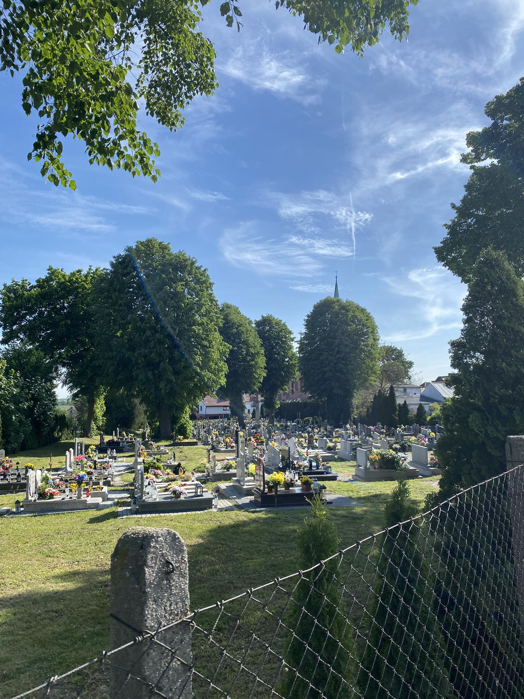

Stary cmentarz
Pierwotnie w parafii Janowice, tak jak to bylo w zwyczaju prawie wszedzie, miejscem
pochowku martych byl plac przykoscielny. Dopiero póznie utworzono nowy cmentarz, preznaczaja na ten cel czesc pola nalezacego do proboszcza. W parafii Janowice
znazniejszych parafian chowano wewnatrz kosciola. Dnia 16 lutego 1684 roku pochowano tam wielkiego fundatora kosciola- Walentego Zarzina. Oryginat dokumentu fun-dacji janowickiego mynarza Walentego Zarzina znajduje sie w archiwum w Opawie.
Nowy cmentarz
Ksiądz Mohr Założył nowy cmentarz o powierzchni jednej morgi 25 arów jest to obecny Kyrhov znajdujący się naprzeciw kościoła
Do tego czasu pogrzebano w kościele i wokół niego dnia 21 lipca 1861 roku nowy cmentarz został poświęcony w połowie XVIII wieku była w Janowicach kaplica pogrzebowa Beinhaus.
jednak w dokumentach z 19 wieku nic ani nie słychać być może spaliła się razem ze starym kościołem
II nowy cmentarz
Wybudowano również II cmentarz w 1953 roku lecz więcej informacji na jego temat nie posiadamy